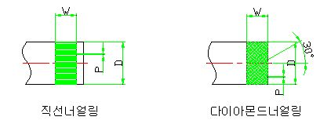

너얼링의 종류 및 표기

단위 : ㎜
|
종 류 |
직 선 너 얼 링 |
다이아몬드 너얼링 |
|||||
|
피 치 P |
0.3 |
0.6 |
0.8 |
(1.3) |
0.6 |
0.8 |
(1.3) |
|
너 얼 링 에 의 한 직경의 최소증가량 (금 속) |
0.08 |
0.15 |
0.2 |
0.35 |
0.15 |
0.2 |
0.35 |
|
소재경의 구분D |
1.6이상 |
3.2이상 |
6이상 |
9.5이상 |
3.2이상 |
4.5이상 |
9.5이상 |
|
폭 W |
1 1.6 (2) 2.5 |
1.6 (2) 2.5 |
(2) 2.5 |
2.5 |
2.5 |
2.5 |
2.5 |
|
(3.2) |
(3.2) 4 (5) 6.3 |
(3.2) 4 (5) 6.3 |
(3.2) 4 (5) 6.3 |
(3.2) 4 (5) 6.3 |
(3.2) 4 (5) 6.3 |
(3.2) 4 (5) 6.3 |
|
<비고> ① 피치는, 너얼링공구의 외경에서의 원주피치이다.
다이아몬드 너얼링은 치홈에 수직인 단면에서 측정한 것이다.
② 산의 각도는, 너얼링공구의 골의 각도를 80˚로 한다.
다이아몬드 너얼링은 치홈에 수직인 단면에서 측정한 것이다.
③ 소재경이 표의 값 이하의 경우는너얼링이 어렵기 때문에 생산기술가 협의하여 작업할 것
④ 너얼링의 폭은, 소재경을 초과해서는 안된다.
단, 너얼링이 재료의 끝에서 시작하는 겨우에 한해서 재료경을 초가할 수 있다.
이 경우의 폭은, 표의 치수와 같게 하는 것이 좋다.
⑤ 호칭방법은, 너얼링의 종류, 피치의 순으로 한다.
예) 직선너얼링 - 0.8P